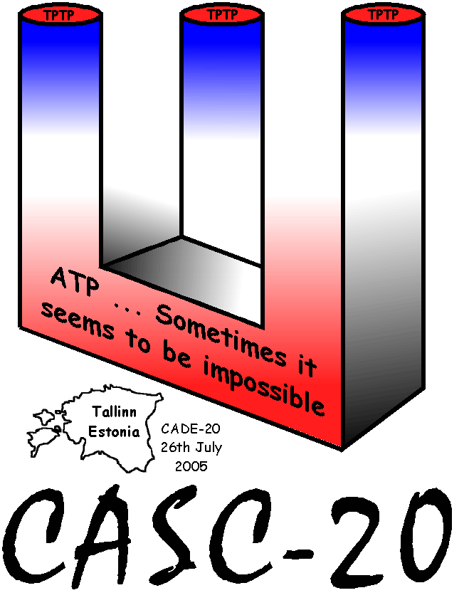

System Execution

- Run in the StarExec infrastructure
- CPU time limited by setrlimit and other tricks
- WC time limited by alarm and other tricks
- Memory usage limited by rlimit and other tricks
- Systems' standard output monitored for results
- Results presented on WWW